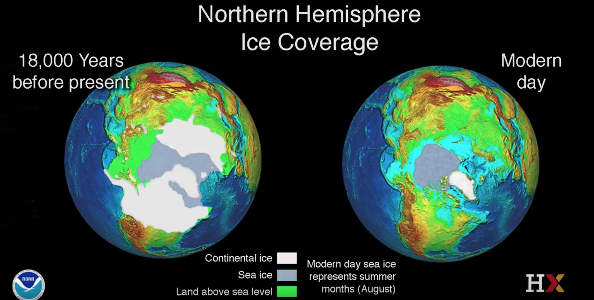
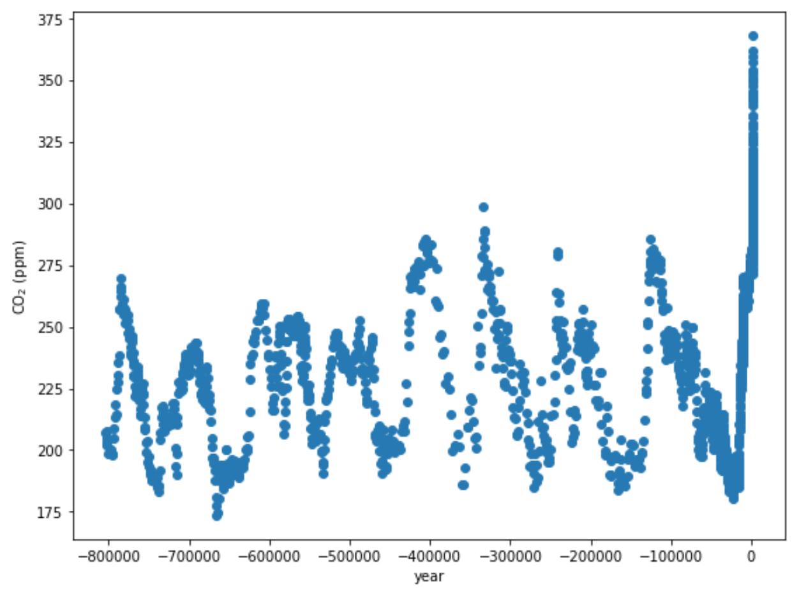
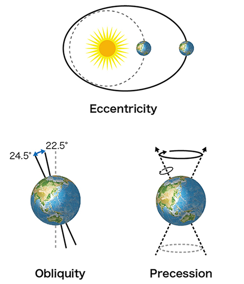
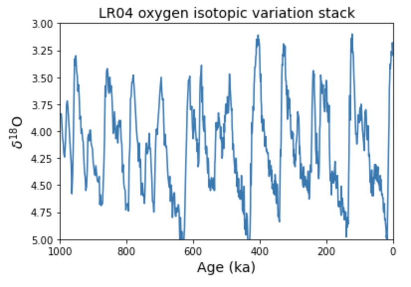

10.2 Drivers of glacial-interglacial cycles¶
We have talked about how 20,000 years ago during the Last Glacial Maximum, much of North America has covered by a thick ice sheet:

And we have looked at ice core data that shows that concentrations of CO\(_2\) in Earth’s atmosphere has varied through time:

What sets the timing of these glacial-interglacial cycles?¶
Recall from your reading of section 19.1 of Physical Geology – 2nd Edition, By Steven Earle (Chapter 19.1 What Makes the Climate Change), besides the anthropogenic sources of CO\(_2\) there are also variations in Earth’s orbit around the sun and rotational tilt that cause Earth’s climate to change.
Earth’s orbit - pacemaker of the Ice Ages¶
Watch this video from PBS NOVA:

Check out this tutorial¶
Material in this section of the notebook is modified from materials of Lisa Tauxe’s Python for Earth Science Students course: https://github.com/ltauxe/Python-for-Earth-Science-Students
In 1920, Milutin Milankovitz explained the coming and going of ice ages as a response to changes in the Earth’s insolation (the amount of energy recieved from the sun). He argued that insolation is controlled by changes in the Earth’s orbit around the sun. This idea has now been widely embraced by the paleoclimate community, largely because of the very strong coherence between cycles in Earth’s orbit and evidence for changes in ice volume using geochemical proxies like oxygen isotopes —— data we will look at today.
The orbital cycles are influenced by gravity of the Moon, Sun, Jupiter, and Saturn and can be calculated knowing their orbital parameters. Milankovitch famously took the first stab at it from his prison cell during WWI. Nowadays it is calculated with supercomputers. The key parameters are eccentricity (or ovalness of the orbit around the sun), the obliquity (tilt) of the spin axis and the precession of the spin axis.

Figure from JAMSTEC.
The Earth’s orbital parameters of ellipticity, obliquity and precession vary in predictable ways, i.e. with frequencies we can estimate with spectral analysis.
Watch these video lectures from Daniel Schrag at the Harvard University Center for the Environment:


The ice core CO\(_2\) record is a very impressive one, but unfortunately, it only goes back ~800,000 years. While these seems like a long time, it is only 0.02% of the history of the Earth.
One way that we can go further back with a paleoclimate record is using marine fossils such as formainifera. Foraminifera are made of calcium carbonate: CaCO\(_3\)
The oxygen isotopes (\(^{16}\)O vs \(^{18}\)O) in the CaCO\(_3\) forms a record of both of temperature and ice volume. \(\delta^{18}\)O is a way to express the ratio between \(^{16}\)O and \(^{18}\)O.
When water is warm \(\delta ^{18}\)O is low and when water is cold \(\delta ^{18}\)O is high. There is a similar relationship with ice volume: when there is less ice the \(\delta ^{18}\)O of water is lower and there is more ice is cold \(\delta ^{18}\)O of water is higher which ends up contributing to the value of the fossil foraminifera.
So higher \(\delta^{18}\)O values are associated with a colder planet and lower \(\delta^{18}\)O values with a warmer planet.

What frequencies do you initially observe in this record? 100ka? 40ka?